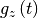
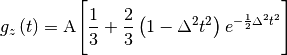
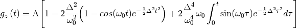

Dynamic Kubo Toyabe fitting function for use by Muon scientists defined by

where  is the static KT function, and  the muon hopping rate.
the muon hopping rate.
 :
:

DynamicKuboToyabe function has one attribute (non-fitting parameter), ‘BinWidth’, that sets the width of the step size between points for numerical integration. Note that small values will lead to long calculation times, while large values will produce less accurate results. The default value is set to 0.05, and it is allowed to vary in the range [0.001,0.1].
| Name | Type | Default | Description |
|---|---|---|---|
| BinWidth |
| Name | Default | Description |
|---|---|---|
| Asym | 0.2 | Amplitude at time 0 |
| Delta | 0.2 | Local field |
| Field | 0.0 | External field |
| Nu | 0.0 | Hopping rate |
C++ source: DynamicKuboToyabe.cpp (last modified: 2019-07-17)
C++ header: DynamicKuboToyabe.h (last modified: 2019-11-14)